Motorsport · Mobile app
Porsche Sprint Challenge Ibérica
The championship’s official app: live broadcasts, real-time results, document management for drivers and teams, and direct communication from race control.
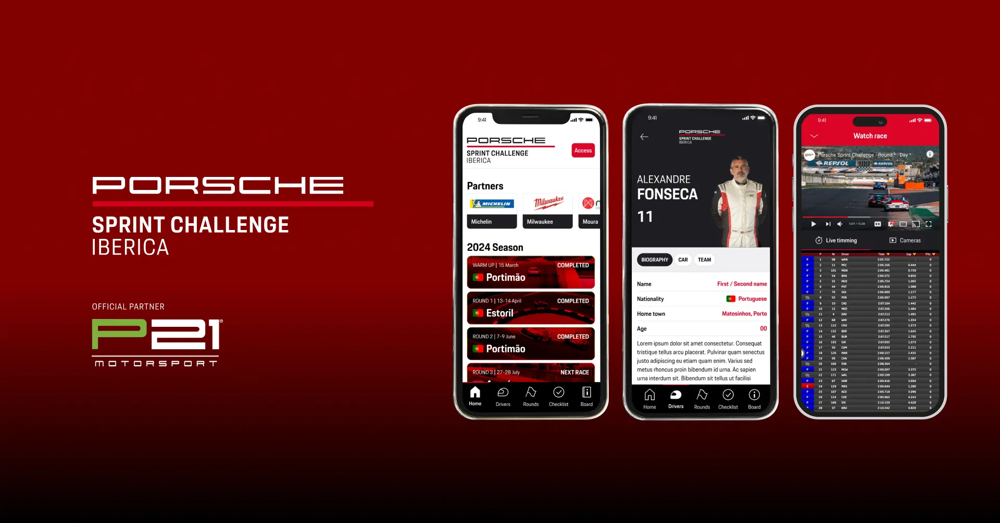
The short version
Running the championship relied on human effort to make up for technology gaps: documents validated over WhatsApp, notices by phone and no central place for fans to follow the season.
Research and MVP scope definition, wireframes and visual design.
An app with a multi-camera live stream, document checklist, official notifications, calendar, gallery and a back office to import race data.
Overview
About PSCI
The Porsche Sprint Challenge Ibérica is one of the leading one-make championships on the Iberian Peninsula. Successor to the former GT3 Cup, it has established itself as the ideal platform both for rising young talent and for amateur drivers (“gentlemen drivers”) seeking the highest level of GT competition.
About P21 Motorsport (our client)
Led by Series Manager José Monroy, P21 Motorsport runs the PSCI championship, focusing on:
- Sporting management: ensuring full compliance with FIA and FPAK/RFEDA regulations.
- Paddock logistics: coordinating track time, paddock layout and premium hospitality.
- Media and communication: promoting the events, managing live broadcasts and protecting the Porsche brand image in regional motorsport.
Strategic goals
- Operational centralization: removing manual workflows by moving applications and official communications to a secure, dedicated environment.
- Engagement: increasing fan loyalty and session time through direct contact and exclusive content.
- Real-time data: delivering an immersive experience with live results.
- Excellence in the driver journey: simplifying track logistics to reduce errors and speed up official responses.
Research
What we heard from stakeholders
To better understand the requirements before designing the solution, we interviewed the three pillars of the operation. The diagnosis revealed a critical dependence on human effort to make up for technology gaps.
Pain points identified
Manual validation: registration documents (licenses, personal documents, etc.) are handled over WhatsApp. With more than 30 drivers and teams per season, the message history becomes impossible to audit.
Too much effort to communicate: sharing track entry times (pre-grid) or pending tasks depends on physical effort or individual phone calls.
Barrier to engagement: the audience feels there is no central place to follow the season off the track.
Proposed solutions
- Live broadcast — multi-camera (track and on-board), with real-time results and detailed statistics for an immersive experience.
- Document management (checklist) — a dedicated space where drivers and teams upload documents and follow the validation status (Pending/Approved) in real time.
- Technical data import — centralizing lap times, penalties and other relevant race data, simplifying management for the event promoter.
- Calendar and gallery — quick access to the season schedule and a gallery of high-quality photos and videos to engage fans.
- Smart notifications — replacing WhatsApp with push notifications and official alerts, so the right information reaches the right person at the right time.
Competitive analysis
To understand communication patterns and the digital experience in motorsport, we analyzed two references: one recommended directly by P21 Motorsport and another as a design initiative, for innovation benchmarking.
| Feature | 24H Series | Formula E | PSCI |
|---|---|---|---|
| Live and results | ✓ Yes | ✓ Yes | ✓ Yes |
| Multi-camera / on-board | ✕ No | ✓ Yes | ✓ Yes |
| Registration management (drivers and teams) | ✓ Yes | ✕ NoThese registrations are done on the FIA’s own platform. | ✓ Yes |
| Push notifications (race control and general) | ✓ Yes | ✓ Yes | ✓ Yes |
| Gallery | ◐ PartialExternal | ✓ Yes | ✓ Yes |
| News | ✓ Yes | ✓ Yes | ✓ Yes |
| Circuit and driver profile | ◐ PartialCircuit only | ✓ Yes | ✓ Yes |
Definition
Information architecture
Five main areas from the home screen, with events, drivers and the live stream opening into subpages.
Shortcut to Settings
News
Race
Calendar
- EventsResults, gallery and circuit
Drivers
- Event history
- Cars
Live
- Broadcast
- Live resultsLinks to the event results
Original map: view image

Design
Low-fidelity wireframes
We started by defining the narrative and the different hierarchies that would make up our racing app.

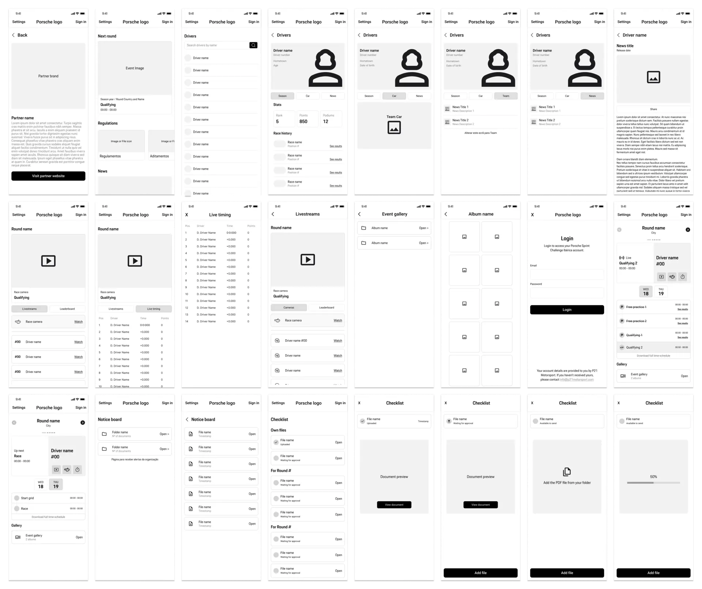
The app structure was not developed in isolation. We took a participatory design approach, in which the wireframes were validated in continuous cycles with the PSCI Race Manager.
Design system
Given the brand’s visual heritage and prestige, creating a new visual language from scratch would have been counterproductive. So the app interface was built entirely on the Porsche Design System (v3).
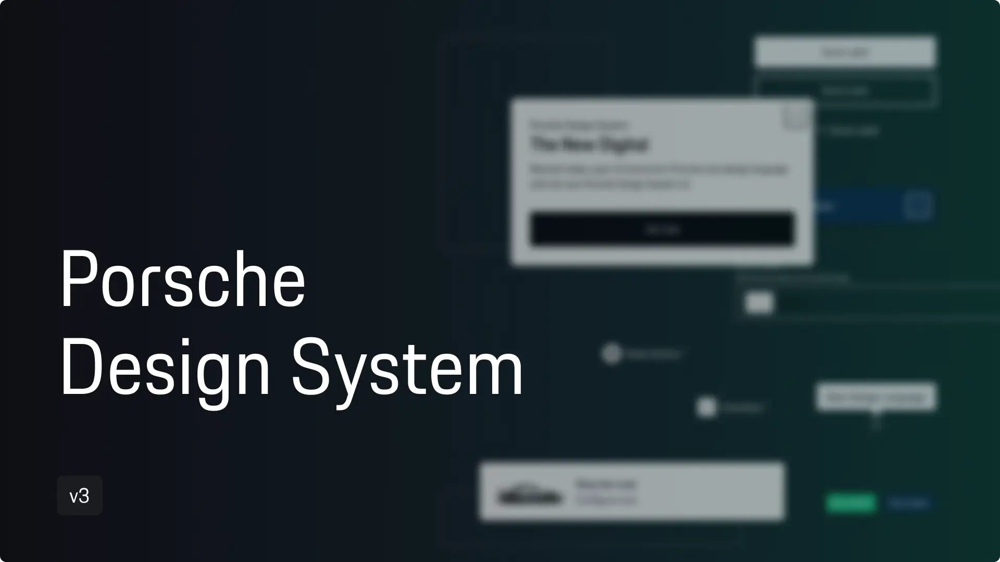
Final layouts
Profile management
An individual dashboard to manage personal data, notification preferences and access by user type (Administrator, Driver, Team or Spectator).
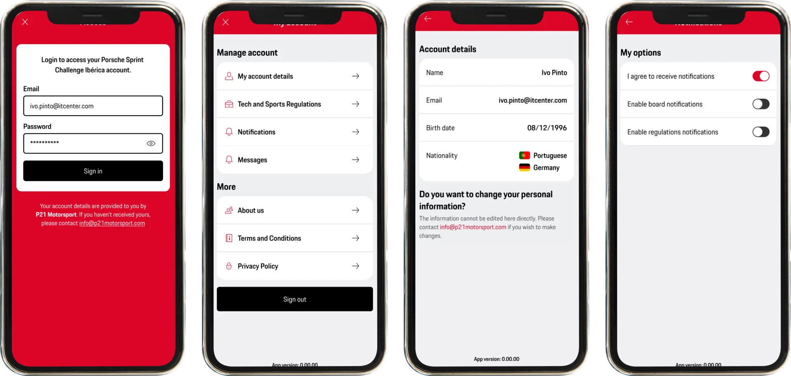
Checklist
A dedicated space for drivers and teams to manage and upload the registrations for each event, following the status of each submission in real time.
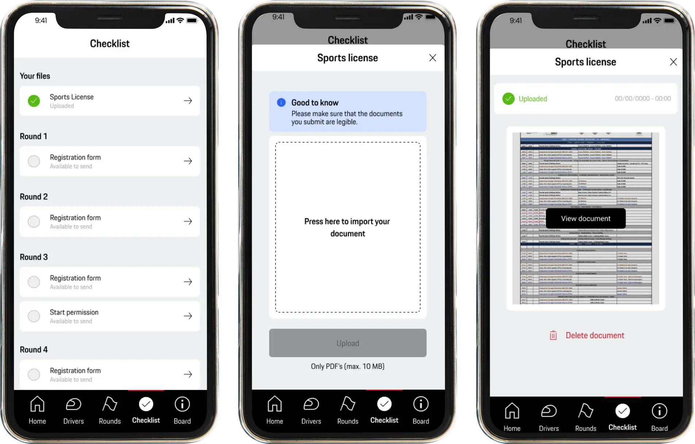
Live and results
Lets every user type watch the races and follow the standings in real time. It includes several camera angles, with each driver’s perspective (on-boards) and an overview of the race, for an immersive experience for teams and fans.
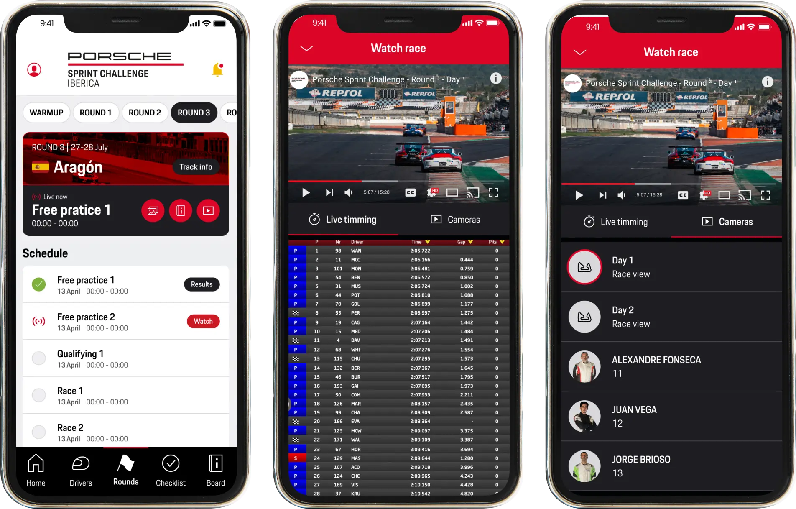
Drivers and circuits
Explore the starting grid with detailed driver profiles, technical car specifications and strategic track information, bringing all of the championship’s technical knowledge together in one place.
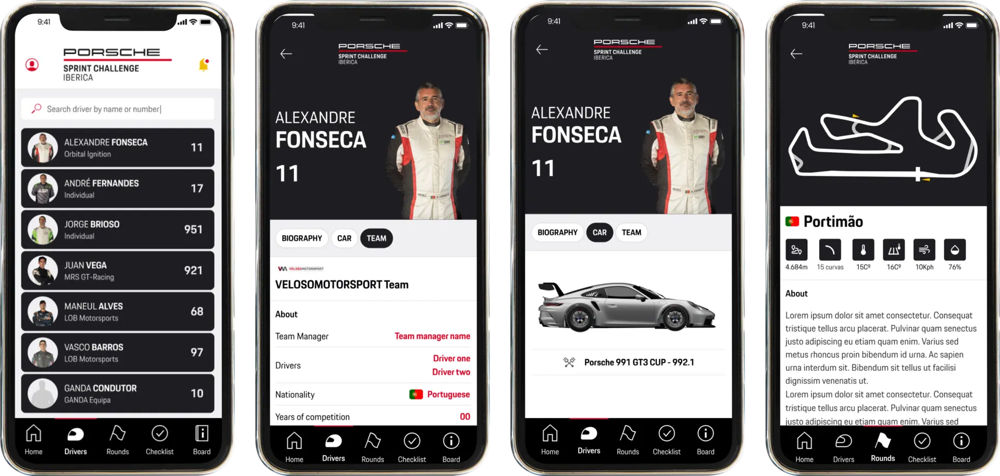
App content management
This back-office platform (CMS) makes it quick and easy to import race data, such as lap times, penalties and other relevant information, simplifying management for the event promoter.
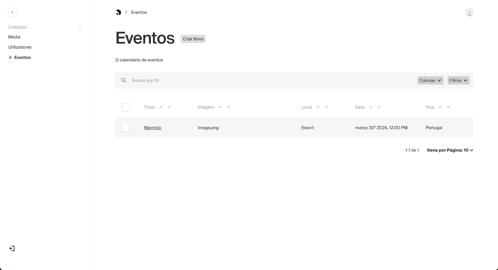
Season calendar
Quick access to the full season calendar. Users see dates, locations and the key information for each event, making planning easier for every team.
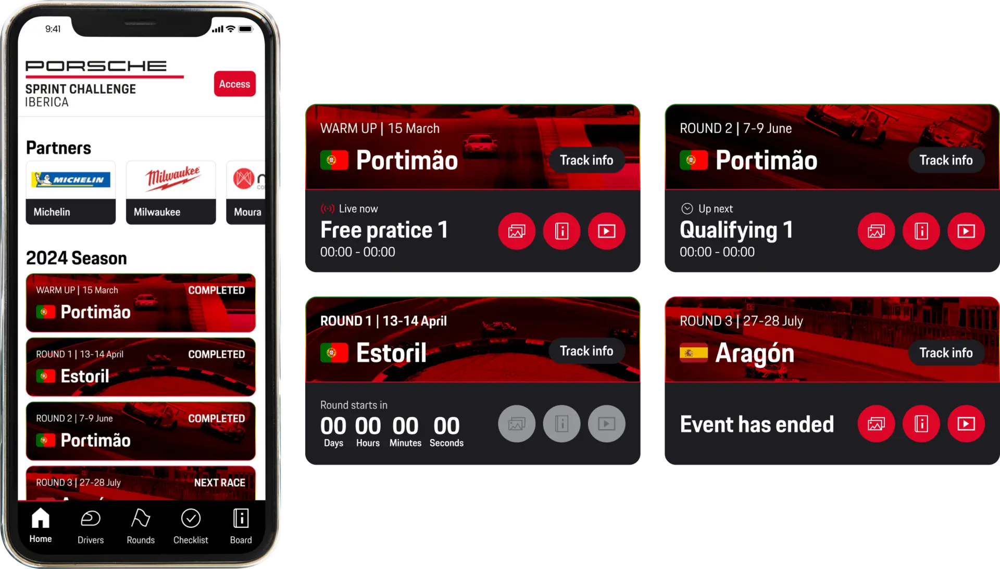
Race control communication
The digital command center for drivers and teams. Instructions from race control, track entry alerts and logistics updates arrive instantly, so no one misses a critical moment of the competition.
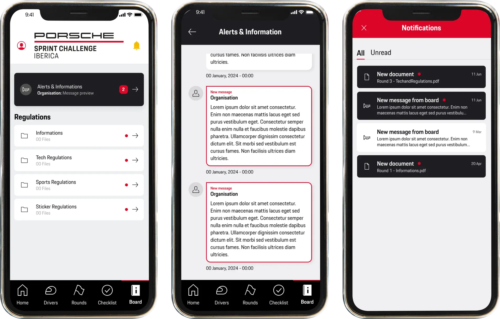
Unforgettable moments
A gallery of photos and videos from past races, giving motorsport fans a broader and more engaging view of the event, with incredible moments and high-intensity action.
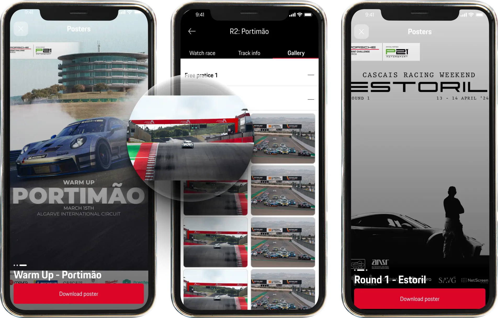
Learnings
Designing for mobile
This was my first mobile app, and I learned the critical importance of breakpoints, safe areas and touch target sizes in iconography. Going from design to a production-ready product taught me that mobile usability demands technical rigor far beyond desktop design.
Launching on the app stores
For the first time, I was responsible for designing and managing the assets for the App Store and Google Play. I learned to adapt the visual communication to each platform’s guidelines and to capture the user’s attention from the very first interaction.
Collaborating with stakeholders
Working directly with the Race Manager showed me the true value of human-centered design. Feedback from people “on the ground” is what separates a visually pleasing app from a solution that solves real business and operational problems.